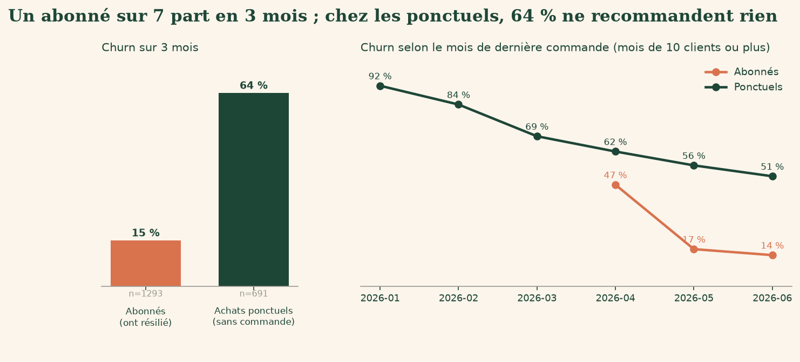
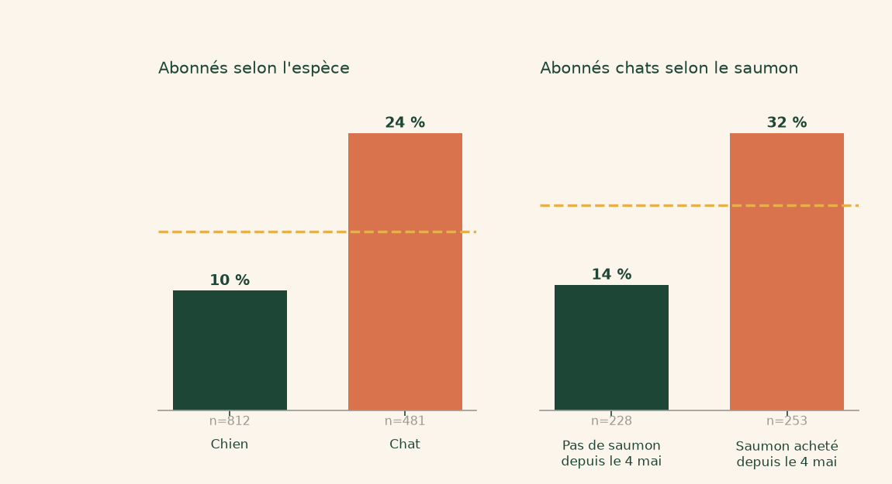
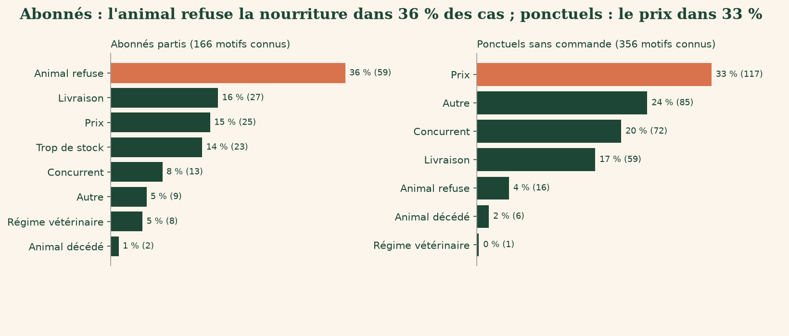
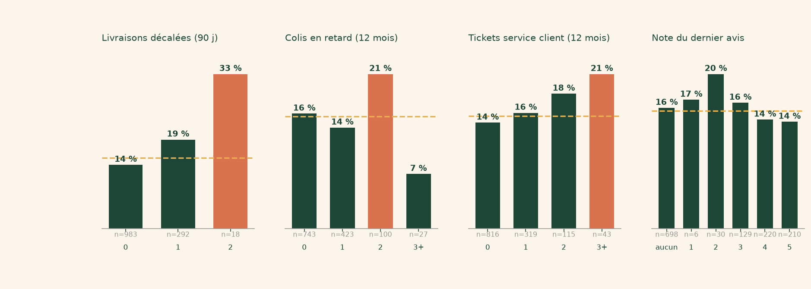

Plan anti-churn : qui part, pourquoi, et quoi faire
Comité de direction, novembre 2026
Bien nourris, bien dans leurs pattes.
15,2 % des abonnés ont résilié en trois mois

197 abonnés sur 1 293. Échantillon de 1 984 clients, pas les 18 000 actifs.
Les chats partent deux fois plus que les chiens

Chats : 23,7 %, chiens : 10,2 %. Le saumon n'est pas prouvé comme cause.
Chez les abonnés, l'animal qui refuse passe avant le prix

Abonnés : 59 motifs sur 166, 25 pour le prix, 31 sans motif. Ponctuels : prix, 117 sur 356.
Les livraisons décalées précèdent les départs

20,0 % contre 13,7 % sans décalage. Deux décalages : 18 clients seulement.
Les nouveaux abonnés partent presque deux fois plus
26,1 %
inscrits depuis le 1er mars 2026 (29 sur 111)
14,2 %
inscrits avant (168 sur 1 182)
Les achats ponctuels se traitent à part
64,1 %
sans commande sur la période (443 sur 691)
93,1 %
après un colis en retard, contre 59,9 %
Aucune résiliation ici.
On relit d'abord, on mesure l'effet ensuite
Semaine 1
Relire les 20 messages, trancher les gestes.
Premier mois
Envoyer, contacter après chaque décalage.
Premier trimestre
Mesurer avec un groupe témoin.
Le plan couvre ses coûts, de justesse en prudent
10 % évités
+895 €
Gain 6 935 €
20 % évités
+7 830 €
Gain 13 870 €
Coûts 6 040 €. Gains en CA, plafond.
Ce que l'IA a fait, ce qu'il reste à faire valider
L'IA a fait
Nettoyage, calculs, graphiques, 20 messages.
À valider par vous
Budget, coûts, gestes commerciaux, relecture des messages.